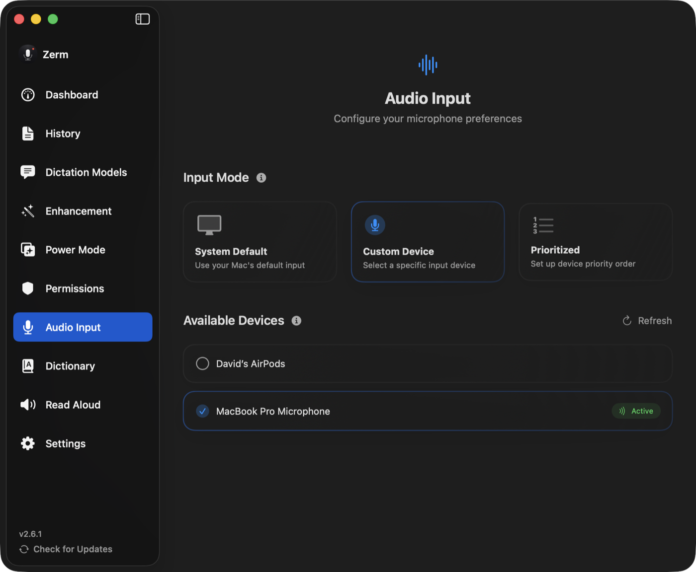

Setup
Audio input
Choosing a microphone, and what to do when the one you want keeps disconnecting.
Zerm records from one microphone at a time. Which one is decided by the input mode.

Input modes
System Default. Zerm uses whatever macOS is currently using. Change the input in
System Settings or plug in a headset and Zerm follows. The simplest option, and the
right one if you only ever have one microphone.
Custom Device. Pin one specific device. Zerm always records from it and ignores what
macOS considers the default. Use this when your Mac keeps choosing the built-in mic over
the good one.
Prioritised. An ordered list. Zerm records from the highest-ranked device that is
actually connected, and moves down the list when it is not.
Prioritised is the mode for anyone who moves between setups: put your headset first,
your desk microphone second, and the built-in mic last. Plug the headset in and it wins;
unplug it and Zerm falls back without you touching anything.
Testing
The microphone test shows a live level meter, so you can confirm the right device is
active and that it is actually hearing you before you rely on it. Speak normally and
watch the meter move.
If the meter does not move at all, check the microphone permission first — see
permissions.
Device changes while recording
Zerm watches for devices appearing and disappearing. A device that vanishes mid-session
does not take the app down with it, and the list refreshes on its own; there is a
refresh button for the times macOS is slow to notice.
Changing the selected device while a recording is in progress takes effect on the next
recording, not the current one.
Echo cancellation and gain control
An experimental setting routes capture through VoiceProcessingIO, which adds acoustic
echo cancellation and automatic gain control.
Worth enabling in a noisy room, or when you dictate with speakers on and the microphone
is picking them up. It changes the character of the audio, so if transcription accuracy
drops after enabling it, turn it back off. Stop and restart recording after changing the
setting.
Level and auto-stop
Auto-stop decides you have finished speaking by watching the input level against a
threshold. A microphone with very low gain can therefore trip auto-stop early. If
recordings are cutting off while you are still talking, raise your input level in
System Settings, or increase the silence duration. See dictation.